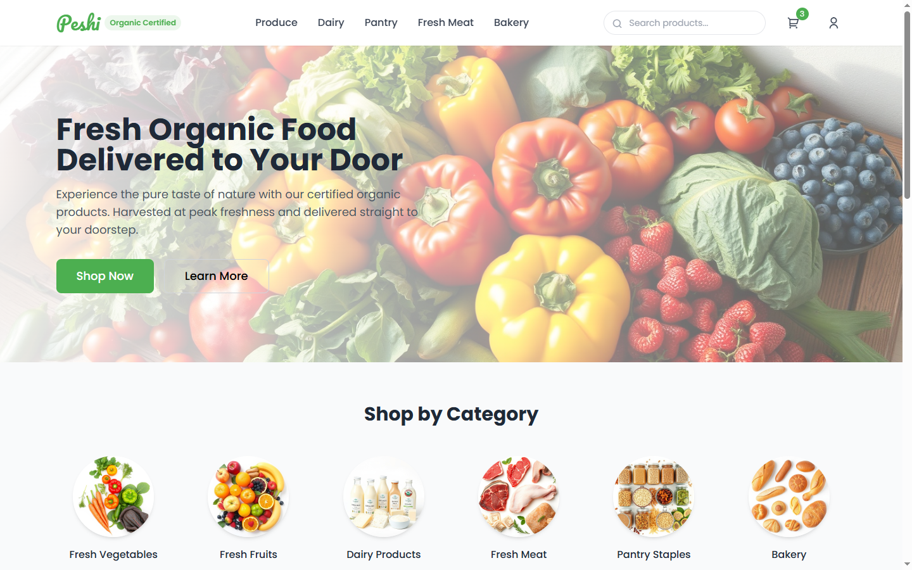
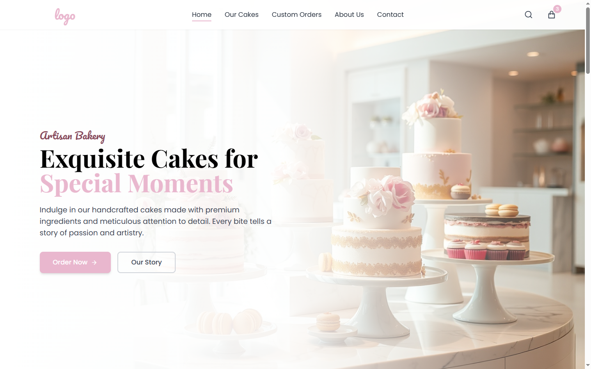
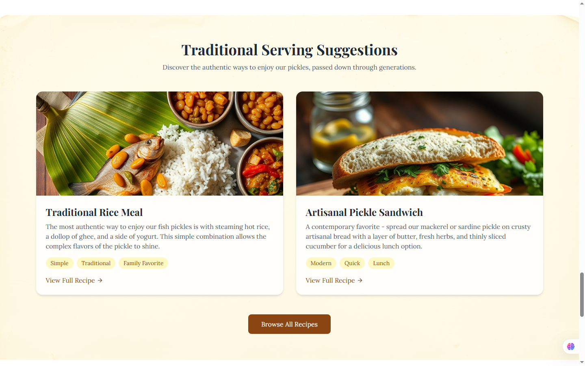

Organic Shopping Home Page
Organic Website is a clean, eco-friendly e-commerce platform for fresh, chemical-free produce. I designed a responsive homepage with a natural color palette, focusing on user experience and trust.

Organic Website is a clean, eco-friendly e-commerce platform for fresh, chemical-free produce. I designed a responsive homepage with a natural color palette, focusing on user experience and trust.

Welcome to Nigals Cakes World – your go-to spot for handcrafted cakes, cupcakes, and dessert jars made with love and flair. From birthdays to weddings, we turn sweet moments into unforgettable treats using only the finest ingredients.

Crafted with time-honored recipes and the finest ingredients, Rajan Pickles brings the bold, tangy flavors of homemade Indian pickles to your table. Each batch is prepared in small quantities to ensure quality, using sun-ripened fruits, aromatic spices, and cold-pressed oils for an unforgettable taste experience.